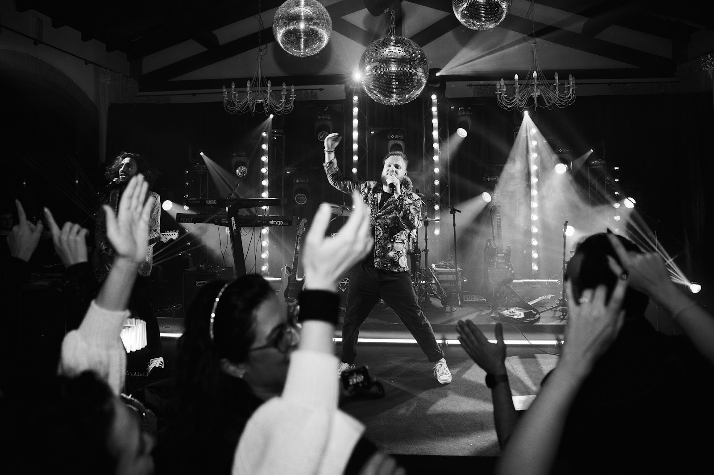
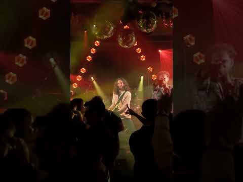

Party band · Verona
La party band per matrimoni ed eventi
Tre musicisti, due ore di medley dagli anni '60 a oggi, senza mai fermarsi. In Veneto, sul Garda, in Lombardia e in Trentino.
Matrimoni
Dal sì
all'ultimo ballo
Ci occupiamo della musica di tutta la giornata, così voi pensate solo a godervela.

Cerimonia e aperitivo in acustico
Voce e chitarra per l'ingresso, gli anelli e il brindisi. Scegliete i brani, noi li cuciamo sui vostri momenti.

Due ore di party, senza pause
Un medley da quindici minuti per ogni decennio, dagli anni '60 alle hit di oggi. E il vostro primo ballo, dal vivo.

DJ set fino a tardi
Quando la band chiude, la festa continua: DJ set su richiesta, con le luci e l'impianto che sono già lì.
Eventi e locali
Lo stesso show, dove volete voi
Locali e pub
Due ore di show, anche con l'impianto del locale.
2 oreSagre e piazze
Impianto per spazi grandi e all'aperto, palco da 4x3 m.
All'apertoFeste private
Compleanni, anniversari, il giardino di casa o un veliero sul lago.
Su misuraAziende e Capodanno
Cene aziendali, fiere e la notte di San Silvestro in piazza.
Tutto l'anno
Dal vivo
Prossimi concerti
Le date aperte a tutti: locali, sagre e piazze. Venite a ballare.
- Carico le prossime date…
Lo show
Sette decenni,
una festa sola
Il promo 2026 in un minuto, e un assaggio di ogni decennio.


Anni '80 Anni '90
Anni '90 Anni 2000
Anni 2000Come suoniamo
Se non ballano anche le nonne, non siamo contenti.
Ogni decennio è un blocco da quindici minuti, un pezzo dentro l'altro, senza fermarsi. Giochiamo con il pubblico e lo portiamo in pista.Recensioni
Recensioni su Matrimonio.com
5,06 recensioni su Matrimonio.com.
Consigliati dal 100% delle coppie.
"Hanno un'energia contagiosa che fa ballare chiunque, persino le zie settantenni."
Si accende la festa
"La festa è decollata grazie alla loro energia travolgente e alla loro simpatia. Sono riusciti a far ballare e cantare davvero tutti gli invitati."
Divertimento assicurato
"Grazie ai medley la serata è stata super dinamica e ha fatto ballare tutti, persino le nonne."
Domande
Prima di chiamarci
In che zone suonate?
Siamo di Verona: suoniamo in tutto il Veneto, sul Lago di Garda, in Lombardia e in Trentino. Per le date più lontane chiedeteci pure.
Che musica suonate?
Le hit che fanno ballare tutti, dagli anni '60 a oggi: pop, rock e dance italiani e internazionali, in medley per decennio. Le vostre canzoni del cuore le aggiungiamo volentieri.
Quanto dura lo show?
Due ore di live, in blocchi da circa quindici minuti per decennio. Prima, se volete, la cerimonia e l'aperitivo in acustico; dopo, il DJ set.
Portate voi l'impianto?
Sì: audio e luci sono nei pacchetti, con il fonico in quelli più completi. Nei locali possiamo usare anche l'impianto di casa.
Che spazio vi serve?
Un palco di almeno 4x3 metri, corrente a 220V con due o tre prese, un riparo se si suona all'aperto e un posto dove cambiarci.
Quanto prima arrivate?
Da una a due ore prima, per montare e fare il soundcheck. Ci serve un parcheggio o una zona di carico vicino all'ingresso.
E la SIAE?
I permessi SIAE sono a carico di chi organizza: vi diciamo noi cosa serve e quando farli.
Preventivo
La vostra data è ancora libera?
Data, posto e che festa è: vi rispondiamo con la disponibilità e il preventivo, di solito entro un giorno.
Preferite WhatsApp? Scriveteci lì